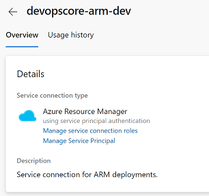
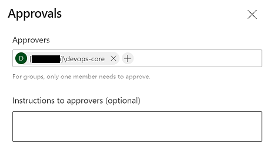
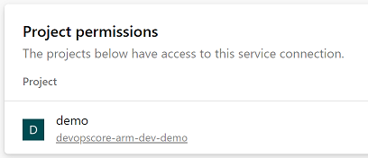
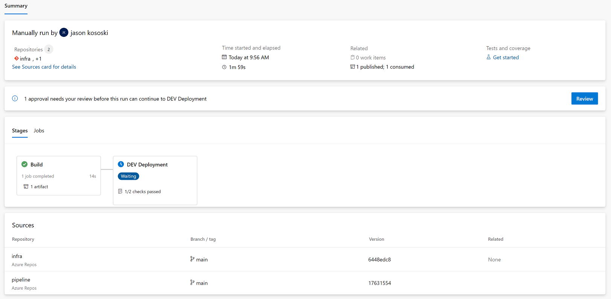
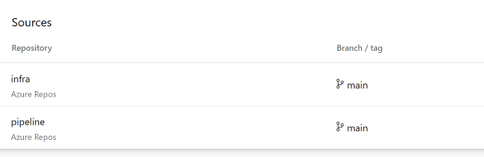
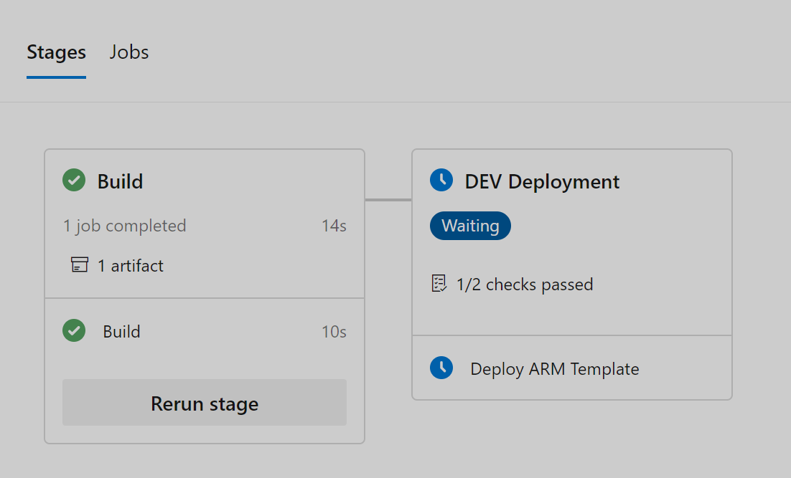
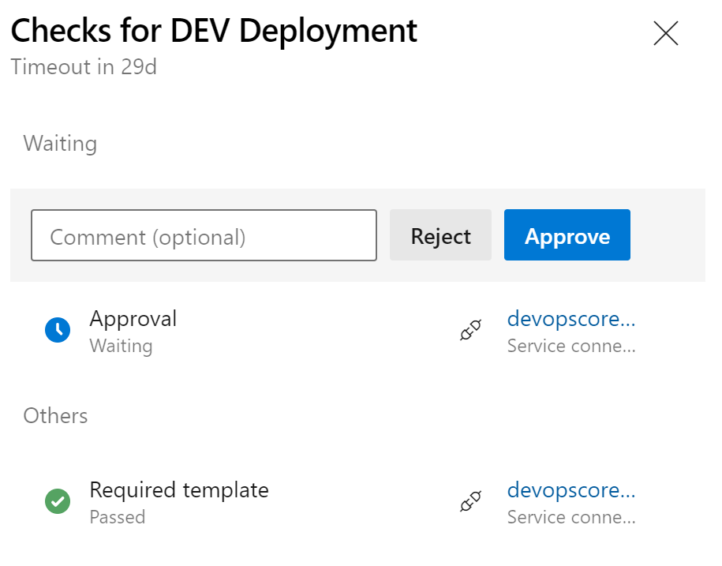

Let’s talk about YAML pipelines in Azure DevOps. YAML pipelines are great! Using YAML pipelines in Azure DevOps allows deployment pipelines to be expressed as code. Expressing pipelines as code simplifies the use of version control to support build & release pipelines. It also allows DevOps professionals to create libraries of pipeline code that can be reused to accelerate new tasks. All of this is great, but it is also important to ensure that pipelines are secure.
One approach to securing a pipeline is to set a clear separation of responsibilities between those who write the code and those who manage the resources that deploy and execute the code. In some industries this may be more than a best practice; it may be a requirement.
Today we’re going to walk through the implementation of a pattern that can be leveraged to build a secure environment that encourages collaboration and cross-training. We’ll use a small project to provide context and direct our implementation.
There are a few core concepts that we’ll be working with to implement our pattern. These Azure DevOps features will allow us to secure resources when using YAML templates.
A service connection is what allows Azure DevOps (ADO) to securely connect to external resources such as the Azure Resource Manager, Kubernetes, etc. It is possible to add all sorts of conditions around the use of a service connection. These are known as Approvals & Checks. We will be using Approvals and Required Templates as part of our project.
Note: It is possible to use Approvals & Checks with other resources such as Environments.
An “extends” template has at least two components. The first component is a “root” template. This is typically the YAML pipeline that triggers the build/deploy. The second component is the “extends” template. The “extends” template augments the behavior of the “root” template by defining the entire flow or modifying the flow specified by the “root”.
The last feature our project will leverage is the ability to share service connections between projects. This allows us to define and manage all service connections in one place. Service connections can be created in the devops-core repository and then shared with the demo repository. The permissions and requirements of the service connection are enforced even when the connection is shared.
We are going to create a new DevOps environment that uses secured YAML pipelines for both build and deploy operations. We also have our first customer: a development team that would like to deploy a shiny new Azure Container Registry! We need to ensure the following:
The development team may create a deployment template
The development team may manage the pipeline triggers
The development team must obtain approvals for deployments
The development team must use a predefined build & release pipeline.
At the end of the project the development team will be able to deploy a container registry using a secured devops implementation.
The templates used in this project can be found on github.
Our “separation of concerns” pattern uses a secure project that is owned and maintained by the DevOps team. We’ll name this project devops-core. The devops-core project will be home to service connections, pipeline templates and the IaC needed to maintain and run the pipeline infrastructure. We’ll go into each of these later as we build them out and secure them.
Additional projects are created for other development teams. Members of development teams may view the contents of the devops-core project (minus secret things) but are unable to make changes to devops-core resources without obtaining approvals from the DevOps team.
We’ll start the implementation by creating and configuring our devops-core project and all of its dependencies. After that we’ll build out a demo project for our development team. We will then create a little bicep template and a YAML pipeline to deploy the project.
Now that we have the two groups setup we can create the devops-core project. This step is pretty easy - just navigate back to the organization page and click the “+ New Project” button in the upper-right.
The next thing we’ll do is create a service connection. The process is pretty well documented in the “Manage Service Connections” page found in the ADO docs.

New Service Connection
For the purpose of this project we’ll create a service connection named devopscore-arm-dev. The devopscore-arm-dev connection will be an ARM connection that has contributor access to a dev subscription.
Note: In practice it is a good idea to develop a strategy for limiting the scope of a service connection.
We will create one repository named pipeline. This repository will contain pipeline templates that will be extended by root templates in other repositories.
The entry-point folder contains our “extends” templates. These are the templates that will be called by other pipeline templates. Our service connections will require that an approved “extends” template is used.
The bicep-deployment.yml is the “extends” template that will be used by our project. There is quite a lot that can be done with extended templates but for our purpose we will keep it simple and use the extended template to define the flow for building and deploying a bicep template. Any “root” templates that extend the bicep-deployment.yml will supply parameters and hand over control the the “extends” template.
Go ahead and create the directory structure noted above. The contents of bicep-deployment.yml are available on github. We’ll talk through some of the YAML next.
These parameters will be supplied by the root template. They’ll be used within the pipeline to generate a resource group and also determine the path of the bicep template.
Service Connection
variables:
...
- name: armServiceConn${{ if eq(variables['System.TeamProject'], 'devops-core') }}:value: devopscore-arm-dev${{ if ne(variables['System.TeamProject'], 'devops-core') }}:value: devopscore-arm-dev-$(System.TeamProject)
The name that a pipeline uses to access a service connection depends on the execution context of the original or “root” pipeline. If the context of the executing pipeline is the same as the shared connection then the project name is appended to the service connection name. If the context of the executing pipeline is the same as the service connection, ie. devops-core, then the name of the service connection is unchanged. The conditional insertion allows us to render the correct connection name when the pipeline runs.
The service connection created previously has the ability to manage resources in Azure. These next steps will place restrictions on the use of the service connection. We will create two restrictions:
An “approval” check that will require that a member of the DevOps team provide an approval at deploy time.
A “required template” check that will require the “root” pipeline template extend our “bicep-deployment.yml” template.
NOTE Approvers may be anyone within the organization.
Approval
Navigate to the service connection and select “Approvals and Checks” from the vertical ellipse menu.
From the next screen select the “Add Check” button.
Choose the option for “Approvals”
Add the ‘devops-core’ group to the list of approvers.

Approvals
Required Template
Navigate to the service connection and select “Approvals and Checks” from the vertical ellipse menu.
From the next screen select the “Add Check” button.
Now we need a project for our development team. Let’s call this project demo and create it in the same organization as our devops-core project. The demo project will contain the Bicep templates that the development team will use to deploy the Azure Container Registry.
Before we can create a pipeline that uses the ARM service connection that was created in the devops-core project we need to share that service connection with the infra project. This is done in the “project settings” of the “devops-core” project. Once there, locate and select the service connection that we want to share (devopscore-arm-dev). From the vertical ellipse chose “Security”. At the bottom of the page you’ll find “Project Permissions”.

Project Permissions
This will allow pipelines in the demo project to use the devopscore-arm-dev service connection.
Now that we have setup some global permissions for the project we need to add a repository for our developers to store their IaC. Let’s call the repository infra and create the initial directory structure shown below.
The main.bicep file will contain a basic Bicep template that can be used to deploy a container registry. The parameter files are used to supply environment overrides (dev) and defaults (main). The azure-pipelines.yml is our “root” template.
The azure-devops.yml is our “root” pipeline template. This template will be extended by referencing our “extends” template (bicep-deploy.yml).
The azure-pipelines.yml is pretty simple. This is because it is only responsible for triggering builds and calling the extended template.
The “resources” section allows us to reference the devops-core/pipeline repository. We are able to reference the “extends” template by using the “extends” attribute and adding template: entry-point/bicep-deployment.yml@core.
To see how the two templates interact compare the “parameters” section of the bicep-pipeline.yml to the “extends” section of the azure-pipelines.yml. The “template” attribute indicates the “extends” template that our “root” template will implement. The parameters defined in the bicep-pipeline.yml are supplied by the azure-pipelines.yml document. This allows the development team to supply some configuration details.
As we’ve seen so far, the actual pipeline definition is created by two different files: a “root” template and an “extends” template. Let’s instantiate our pipeline.
Go to the demo project and navigate to “Pipelines”
Select ‘New Pipeline’
Choose ‘Azure Repos Git’ as the location of the code
Select the infra repository
Finally, choose ‘Existing Azure Pipelines YAML file’ and then supply the location of the azure-pipelines.yml file.
Optionally, rename the pipeline. This will allow us to reuse the same repository for multiple infra projects and pipelines.
Let’s try executing the pipeline. On the first execution you’ll be prompted to provide the pipeline with permissions to access external resources such as the service connection. This will only occur the first time that each new resource is accessed by the pipeline.
There’s a lot of information to explore on the summary page.

Pipeline Execution
The “Sources” section shows two repositories. These include the repository that contains the “root” template as well as the repository that contains the “extends” template.

Pipeline: Sources
The ‘Dev’ stage has passed one check but it is waiting on another. Clicking on the “Review” button or clicking on the link in the stage tile will show the approval and check details. The pipeline has passed the “Required Template” check but it is still waiting on an approval. Clicking “approve” will allow the pipeline to proceed to completion.


Additional deployment stages, such as “test” and “production” can be created by adding additional service connections and updating the templates to include additional deployment stages that use the new connections. The connections can be secured in the same manner as the dev connection and different approvers can be specified for each environment.
That’s pretty much it. In a nut-shell we can secure our pipelines by drawing clear boundaries around responsibilities: develop and deploy. This separation can be achieved in Azure DevOps by creating a project for the devops team and requiring that all release pipelines use curated “extends” templates that are developed/approved by the responsible teams. Maintaining service connections in one place makes the connections easier to manage and easier to secure.